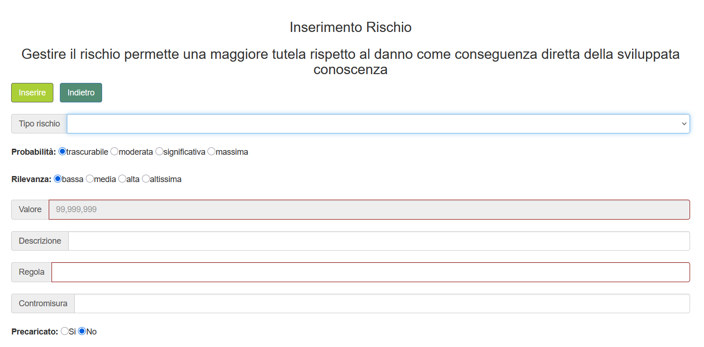
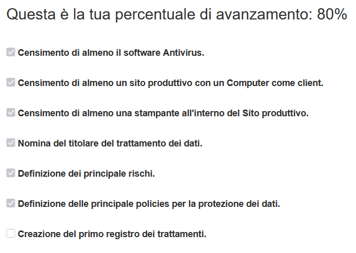
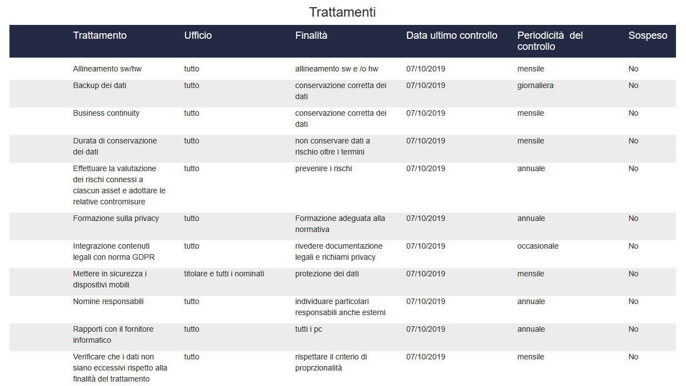

Modelo Ejecutable de Responsabilidades (MAAT)
Contexto
MAAT fue diseñado para apoyar a consultores de privacidad en la realización de evaluaciones estructuradas de cumplimiento GDPR para organizaciones clientes.
El objetivo no era construir una aplicación de gestión tradicional, sino modelar responsabilidades organizativas, controles de cumplimiento y reglas de evaluación de riesgos directamente en la DSL de MySirt, transformando obligaciones regulatorias en comportamiento operativo ejecutable mediante un modelo derivado del execution meta-model.
Enfoque de modelado
El sistema modela los elementos necesarios para el cumplimiento GDPR:
- roles organizativos
- actividades de tratamiento de datos
- clasificación de riesgos
- políticas de seguridad
- cuestionarios de verificación de cumplimiento
Estos elementos se definen en la DSL de MySirt y se compilan en un entorno operativo capaz de guiar a las organizaciones en los procesos de evaluación y documentación del cumplimiento.
Estructura operativa
- cuestionario de evaluación GDPR
- clasificación de riesgos y seguimiento de mitigaciones
- registros de tratamiento de datos
- monitorización del progreso de cumplimiento
- plantillas documentales para la normativa
El sistema resultante apoya a los consultores de privacidad en la realización de evaluaciones estructuradas y en la generación de documentación requerida para auditorías regulatorias.

Interfaz de clasificación de riesgos generada a partir del modelo de cumplimiento, que gestiona probabilidad, impacto y reglas de mitigación.
Evidencia generativa
Comparación cuantitativa entre la definición DSL y el sistema runtime generado.
El sistema se genera a partir del modelo DSL, que instancia el execution meta-model, con extensiones manuales limitadas para personalización de UI y cálculo del progreso de cumplimiento.

Monitorización del progreso de cumplimiento derivada del modelo de responsabilidades organizativas.

Registro de tratamiento generado para soportar documentación GDPR y seguimiento del cumplimiento.
Significado arquitectónico
MAAT demuestra que MySirt puede codificar obligaciones regulatorias y transformarlas en entornos operativos ejecutables.
Cada modelo de cumplimiento representa una instancia específica del execution meta-model aplicada al dominio regulatorio.
En lugar de desarrollar manualmente software de cumplimiento, es el propio modelo organizativo el que se convierte en la fuente a partir de la cual se genera el sistema.
Punto clave
Las responsabilidades regulatorias se modelan una sola vez y son ejecutadas por la Execution Engine, transformando los requisitos de cumplimiento en workflows operativos en lugar de documentación estática.